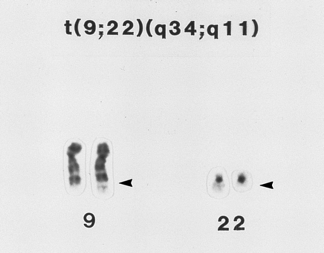

Exercise: cancer genetics
Goal
By the end of this exercise you should be able to:
- classify a cancer gene as an oncogene or a tumour suppressor from the kind of mutation that affects it;
- explain the features of hereditary and sporadic retinoblastoma with Knudson’s two-hit model, and do simple two-hit calculations;
- read loss of heterozygosity from marker genotypes in blood and tumour;
- compute cancer risks in families with incomplete penetrance;
- look up a cancer gene in NCBI Gene, cBioPortal and OncoKB, and read its location, mutation pattern and role.
Do the pen-and-paper part first. The demo and R come after.
Background
Two kinds of cancer gene.
| Oncogene | Tumour suppressor | |
|---|---|---|
| Normal job | promote division when signalled | stop division, repair DNA, trigger apoptosis |
| Mutation | gain of function | loss of function |
| At the cell level | dominant: one allele enough | recessive: both alleles lost |
| Typical mutations | hotspot missense, amplification, translocation | nonsense, frameshift, deletion, LOH |
| Examples | KRAS, MYC, ERBB2, BCR–ABL1 | RB1, TP53, APC, BRCA1/2 |
Two-hit model. A cell lineage becomes a tumour when both alleles of a tumour suppressor are lost. With n cells at risk and a probability u that a given allele is hit (per year, or over a period):
- Hereditary (one hit inherited): expected tumours ≈ n·u; for small risks, risk ∝ u and ∝ age.
- Sporadic (two hits needed in the same cell): expected tumours ≈ n·u²; risk ∝ u² and ∝ age².
- The chance that none of n cells is hit, each with a small probability p, is (1 − p)n ≈ e−np. So the chance of at least one tumour is 1 − e−(expected number).
Loss of heterozygosity (LOH). A tumour loses the normal allele of a tumour suppressor, often with the chromosome region around it. Markers that are heterozygous in blood look homozygous in the tumour.
Penetrance (Part 1): the probability that a person with the genotype shows the phenotype.
By hand
B1. (oncogene or tumour suppressor?) For each tumour finding, say whether the gene behaves as an oncogene or a tumour suppressor, and whether one or both alleles are affected. (a) A heterozygous KRAS G12D missense mutation in a pancreatic cancer. (b) Both copies of CDKN2A deleted in a melanoma. (c) 30 copies of ERBB2 in a breast cancer. (d) A nonsense mutation in APC on one chromosome 5, and loss of the other chromosome 5 in a colon polyp. (e) A BCR–ABL1 fusion in a leukaemia.
B2. (two hits in numbers) A simple model of the developing retina: each eye has n = 106 retinoblasts at risk. During the time they divide, each RB1 allele in a cell is hit with probability u = 2 × 10−6. (a) A child carries a germline RB1 mutation. What is the expected number of tumours per eye, and in both eyes together? (b) Use e−(expected number) to find the probability that a carrier gets no tumour at all. What is the penetrance in this model? (c) What is the probability that a carrier has tumours in both eyes? (d) A child without a germline mutation needs both hits in the same cell. What is the expected number of tumours in both eyes together? Compare with (a).
B3. (linear vs quadratic) In a two-hit model with small risks, 2% of carriers have a tumour by age 1. About what fraction do by age 2? For non-carriers, 0.01% have a tumour by age 10. About what fraction do by age 20, and by age 5?
B4. (reading LOH) A child with retinoblastoma is typed for four markers along chromosome 13, in order from the centromere to the end of the long arm. RB1 lies between M2 and M3.
| Marker | M1 | M2 | M3 | M4 |
|---|---|---|---|---|
| Blood | 1/2 | 3/4 | 1/3 | 2/5 |
| Tumour | 1/2 | 3 | 1 | 2 |
- Which markers show LOH? (b) Name two mechanisms that could produce this pattern, and say how a copy-number measurement would tell them apart. (c) The child’s father is 3/3 at M2 and the mother 4/4. From which parent did the child inherit the mutant RB1 allele, if the tumour kept the mutant allele? (Assume no recombination between M2 and RB1 in the parent’s meiosis.)
B5. (penetrance in a family) A man had bilateral retinoblastoma and carries a germline RB1 mutation. Assume a penetrance of 90%. (a) What is the probability that his child develops retinoblastoma? (b) One of his daughters is now an adult and never had retinoblastoma. What is the probability that she is a carrier? (c) What is the probability that her child develops retinoblastoma?
B6. (BRCA1) A woman’s mother carries a pathogenic BRCA1 allele. The woman has not been tested. Assume a lifetime breast-cancer risk of 60% for carriers and 12% for non-carriers (round numbers for this exercise). (a) What is her prior probability of being a carrier? (b) What is her lifetime breast-cancer risk, before testing? (c) She tests negative for her mother’s allele. What is her risk now?
B7. (Philadelphia chromosome) The photo shows a partial karyotype (G-banded chromosomes 9 and 22) from the bone marrow of a patient with chronic myeloid leukaemia.

Photo: Armed Forces Institute of Pathology, public domain, via Wikimedia Commons_translocation.jpg){kind=link}
- Explain the notation t(9;22)(q34;q11). Which chromosome in the photo is the Philadelphia chromosome? (b) The translocation is balanced: no DNA is lost. Why can it still cause leukaemia? (c) Imatinib inhibits the BCR–ABL1 kinase. Why does it harm leukaemia cells much more than normal cells? (d) Some patients relapse after a few years with a point mutation in the ABL1 kinase domain. Explain this in terms of clonal evolution.
B8. (drivers and passengers) 500 tumours of one cancer type are sequenced. Classify each gene as a likely oncogene, a likely tumour suppressor, or probably neither, and explain. (a) Gene P: mutated in 160 tumours; 140 of the mutations are missense at codon 12 or 13. (b) Gene Q: mutated in 110 tumours; the mutations are nonsense and frameshift, spread along the whole gene. (c) Gene R, a very long gene: mutated in 12 tumours, all different missense mutations at random positions.
Explore
The demo follows 1000 children who inherited one mutant RB1 allele and 1000 who did not. Each child has n retinal cell lineages, half in each eye, and each RB1 allele in each lineage is knocked out at rate u per year. A lineage becomes a tumour when it has lost both copies. The rates are exaggerated so that sporadic cases show up in only 1000 children; the shapes are what matter.
E1. With the default settings (n = 200, u = 0.0015, T = 10), read the table. What fraction of each group has a tumour by age 10? How many tumours does an affected child have on average, and what fraction of affected children have tumours in both eyes? Relate this to the clinic: which children get bilateral, multiple tumours, and which get a single tumour in one eye?
E2. Compare the median age at the first tumour in the two groups. Then switch to the log–log view. Which curve rises with slope about 1, and which with slope about 2? Explain, from the number of hits each group still needs, why one curve is linear in age at early ages and the other quadratic.
E3. Press rarer hits (u ÷ 2). By what factor does the fraction affected change in each group? Compare the inherited group at age 1 (linear view) and the sporadic group at age 10. Why does halving the mutation rate reduce the sporadic risk so much more?
E4. Return to default and press Knudson’s plot. Which group gives the (nearly) straight line, and why does a straight line on this plot mean “one event at a constant rate”? Then press new sample a few times: which numbers in the table jump around the most, and why?
E1. (Default, seed 1.) Inherited first hit: 94% have a tumour by age 10, with 3.05 tumours per affected child, and 63% of the affected children have tumours in both eyes. Sporadic: 4.9% have a tumour, with 1.02 tumours per affected child, and only 2% are bilateral (1 of 49). (The model’s expected values are 95% and 4.3%.) With one hit already in every cell, the second hit happens in many of the 200 lineages, so tumours are multiple and bilateral. Without it, two hits in the same lineage are rare, so a sporadic case almost always has one tumour in one eye. This is the clinical picture of hereditary and sporadic retinoblastoma. Note also that about 6% of the carriers never get a tumour: incomplete penetrance, from a purely random process.
E2. The median age at the first tumour is 2.2 years for inherited cases and 7.5 years for sporadic cases. On the log–log view the inherited curve rises with slope about 1 and the sporadic curve with slope about 2. An inherited case needs one more hit, so the chance of a tumour by age t is about n u t, proportional to t. A sporadic case needs two independent hits in the same cell, each with probability about u t, so the chance is about n (u t)², proportional to t². On log–log axes the exponent is the slope, so the slope counts the hits.
E3. Inherited: from 94% to 77% at age 10, and at age 1 from 0.265 to 0.131, almost exactly half. Sporadic: from 4.9% to 1.0% at age 10; the expected values fall from 4.3% to 1.1%, a factor of 4. With one hit needed, risk ∝ u, so halving u halves it. With two hits needed, risk ∝ u², so halving u divides it by 4. (Tumours per affected carrier also fall, from 3.05 to 1.87, and bilateral cases from 63% to 33%.)
E4. The inherited group gives the nearly straight line (it bends down only at the very end, because we look only at cases diagnosed by age 10). If tumours start at a constant rate, the fraction still undiagnosed falls by the same factor each year, like radioactive decay: e−rate × t, a straight line on a log scale. The sporadic curve stays high and then falls steeply: almost nothing happens early, because a cell must first collect one hit before the second can do anything. Knudson read this shape from real cases. With new sample, the sporadic numbers vary most (for example seed 2 gives 4.3% affected, 0% bilateral, median age 6.3 years), because they rest on only 40–50 cases, while the inherited numbers rest on more than 900.
Find it
F1. RB1 in NCBI Gene. Search NCBI Gene for RB1 human and open the human gene record. Read the Summary box. (a) What is the official full name of the gene, and its Location (chromosome band)? (b) In one sentence from the summary: what does the protein do in the cell cycle? (c) Open the disease record for retinoblastoma in MedGen (OMIM 180200). What mode of inheritance is given? How does this fit with RB1 being recessive at the cell level?
F2. The genes of the Philadelphia chromosome. In NCBI Gene, find the human genes BCR and ABL1 and read their Location. Do the bands match the breakpoints in t(9;22)(q34;q11)? While you are there, read the locations of BRCA1 and BRCA2.
F3. TP53 in cBioPortal. Go to cBioPortal. On the start page, search for and tick the study Ovarian Serous Cystadenocarcinoma (TCGA, PanCancer Atlas), then Query by gene, type TP53 and press Submit Query. Open the Mutations tab. (a) Roughly what fraction of the profiled samples carry a TP53 mutation (read the number of mutated samples above the plot)? Is it a few percent, about a third, or most? (b) What is the most common mutation type (the colours of the lollipops and the table column “Mutation Type”)? (c) Which protein change is the tallest lollipop? (d) Repeat for Breast Invasive Carcinoma (TCGA, PanCancer Atlas). How does the fraction compare? The exact counts can change when a study is updated, so answer in round numbers.
F4. Is it an oncogene or a tumour suppressor? Open the OncoKB Cancer Gene List (Memorial Sloan Kettering, free, no login). Search for TP53, RB1, KRAS and ABL1. Which are annotated as Oncogene and which as TSG? The list also says whether each gene is in the Sanger Cancer Gene Census (COSMIC; its own gene pages need a free registration). Does your classification from the lecture agree?
These facts were checked in November 2026 via the NCBI E-utilities (Gene and MedGen), the cBioPortal API and the OncoKB API.
F1. Click path: NCBI Gene → search RB1 human → “RB1 RB transcriptional corepressor 1 [Homo sapiens (human)]”, Gene ID 5925. (a) RB transcriptional corepressor 1; Location 13q14.2. (b) pRB is a negative regulator of the cell cycle: it binds and represses E2F transcription factors, holding cells in G1 until it is phosphorylated. (The summary also says it was the first tumour suppressor gene found.) (c) MedGen “Retinoblastoma” (C0035335, MIM 180200): autosomal dominant inheritance, gene RB1 at 13q14.2. What is inherited is the first hit; the second hit in a retinal cell is so likely that most carriers are affected. The predisposition is dominant in the pedigree, although the allele is recessive in each cell.
F2.
| Gene | Gene ID | Location |
|---|---|---|
| BCR | 613 | 22q11.23 |
| ABL1 | 25 | 9q34.12 |
| BRCA1 | 672 | 17q21.31 |
| BRCA2 | 675 | 13q13.1 |
ABL1 lies in 9q34 and BCR in 22q11, exactly at the two breakpoints of t(9;22)(q34;q11). (BRCA2 is on chromosome 13, like RB1, but far away, in band q13.)
F3. Click path: cbioportal.org → study list → tick “Ovarian Serous Cystadenocarcinoma (TCGA, PanCancer Atlas)” → Query by gene → TP53 → Submit Query → Mutations tab (lollipop plot and table). (a) Most samples: about 70% of the 523 samples with mutation data carry a TP53 mutation (373 samples in November 2026). The OncoPrint tab shows a slightly different percentage because it also counts copy-number changes. (b) Missense mutations are the most common type (about 60% of the mutations), followed by nonsense, frameshift and splice-site mutations. (c) R175H (arginine 175 to histidine), in the DNA-binding domain. R248Q, R273H and R248W are also tall. (d) Breast: about one third of samples (347 of 1066). TP53 loss is nearly universal in high-grade serous ovarian cancer, but only part of breast cancers have it. R175H is again the most frequent change. A missense hotspot is unusual for a tumour suppressor. The R175H protein is not only inactive but also interferes with the remaining normal p53 (a dominant-negative effect), so selection favours it.
F4. OncoKB: TP53 TSG, RB1 TSG, KRAS Oncogene, ABL1 Oncogene. All four are marked as present in the Sanger Cancer Gene Census. This matches the lecture: KRAS and ABL1 are activated by gain-of-function mutations (G12 hotspots; the BCR–ABL1 fusion), while TP53 and RB1 are inactivated.
Solutions
B1. (a) Oncogene, one allele: a hotspot missense that locks KRAS on. (b) Tumour suppressor, both alleles (a homozygous deletion of CDKN2A, which encodes the cell-cycle brake p16). (c) Oncogene, amplification: too much of a normal growth-factor receptor. (d) Tumour suppressor, both alleles: a point mutation (hit 1) plus loss of the other chromosome, LOH (hit 2). (e) Oncogene: a translocation that creates an always-active fusion kinase; one copy is enough.
B2. (a) Expected tumours per eye = n·u = 106 × 2 × 10−6 = 2; in both eyes 4. (b) P(no tumour) = e−4 = 0.018. Penetrance = 1 − 0.018 ≈ 0.98. (c) The eyes are independent. P(tumour in one given eye) = 1 − e−2 = 0.865. Both eyes: 0.865² = 0.75. (d) Expected tumours = 2n × u² = 2 × 106 × (2 × 10−6)² = 2 × 106 × 4 × 10−12 = 8 × 10−6, about 1 in 125 000 children. That is half a million times less than a carrier’s 4 tumours. Sporadic cases are therefore rare, and nearly always single.
B3. Carriers: risk ∝ age, so by age 2 about 4%. Non-carriers: risk ∝ age², so by age 20 about 0.01% × 2² = 0.04%, and by age 5 about 0.01% × (½)² = 0.0025%. (These approximations hold while the risks are small.)
B4. (a) M2, M3 and M4 show LOH; M1 stays heterozygous. (b) The LOH starts between M1 and M2 and runs to the end of the chromosome. Possible mechanisms: mitotic recombination between M1 and M2, which leaves two copies of the region, both from one parent (copy-neutral LOH), or a terminal deletion from between M1 and M2 to the end, which leaves one copy. Loss of the whole chromosome 13 is ruled out, because M1 is still heterozygous. Copy number tells them apart: two copies of the region in the tumour means recombination, one copy means deletion. (c) The tumour kept allele 3 at M2, which came from the father. The tumour keeps the mutant RB1 allele, so the mutant allele came from the father.
B5. (a) P(child carries) × penetrance = ½ × 0.9 = 0.45. (b) Conditional probability, as in the probability unit: P(carrier and unaffected) = ½ × 0.1 = 0.05; P(non-carrier) = ½. So P(carrier | unaffected) = 0.05 / (0.05 + 0.5) = 0.05/0.55 = 0.091. (c) 0.091 × ½ × 0.9 = 0.041, about 1 in 24. A non-penetrant carrier can pass on the allele: the trait then skips a generation.
B6. (a) ½. (b) ½ × 0.60 + ½ × 0.12 = 0.30 + 0.06 = 0.36. (c) If she does not carry her mother’s allele, her risk is that of a non-carrier: 0.12. A negative test for the family’s variant is informative; a negative test in a family with no known variant is much less so.
B7. (a) A reciprocal translocation between chromosomes 9 and 22, with breakpoints in band q34 of chromosome 9 and q11 of chromosome 22. In the photo, the right-hand chromosome of each pair (marked by an arrowhead) is the rearranged one; the right-hand, shortened chromosome 22 is the Philadelphia chromosome, der(22). (b) The breakpoints fall inside ABL1 and BCR and join them, creating a new fusion gene. Nothing is lost, but a new protein is made: the BCR–ABL1 kinase that is always active. (A germline carrier of an unrelated balanced translocation is usually healthy because no gene is broken or fused.) (c) Only leukaemia cells contain BCR–ABL1, and they depend on it to keep dividing. Normal cells have normal ABL1, which is regulated and less critical for them. (d) In a large population of leukaemia cells, a few cells may already carry, or later acquire, a mutation that stops imatinib from binding. The drug kills the others, so this resistant subclone is selected and grows: clonal evolution under treatment.
B8. (a) Gene P: likely an oncogene: frequent, and concentrated at codons 12 and 13 (this is the KRAS pattern). Selection favours specific activating changes. (b) Gene Q: likely a tumour suppressor: frequent truncating mutations anywhere in the gene, all of which destroy the protein. (c) Gene R: probably neither: a few scattered, different missense mutations in a long gene are what passengers look like. A long gene collects passengers just by being a big target.
Where this leads
The two-hit model is a statement about how fast rare events accumulate in a population of cells. The next two units, Hardy–Weinberg and Drift, selection, take the same forces (mutation, selection and chance) to populations of people. In the ethics module we return to predictive testing for BRCA1/2.
Next: Exercise in R: simulate the two-hit model with rbinom, recover Knudson’s slopes, and summarise real TP53 mutations from cBioPortal.